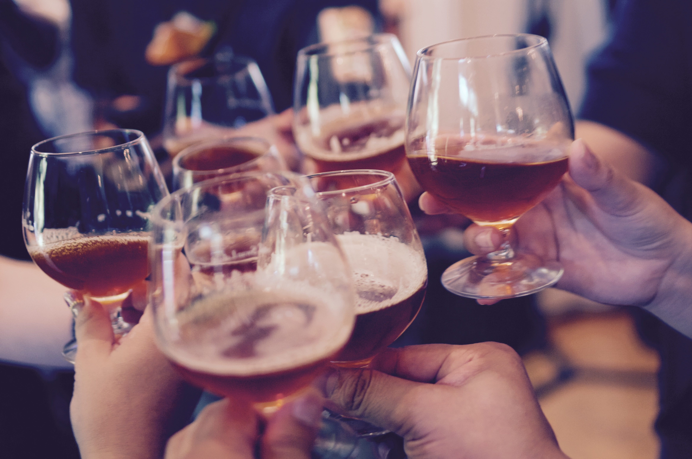

{% assign ordered_collections = site.collections | sort:"frontpageposition" %}
{% for collection in ordered_collections %}
{% unless collection.label == 'posts' %}
{% assign col = collection.label %}
<div class="desktopfix">&nbsp;
</div>
<div class="collheader">
<h2 style="color:#fd031a;"><i>{{ collection.header }}</i></h2>
</div>

<div class="container">
  <div style="width:100%;">
    
    {% for post in site.[col] reversed %}
    <div class="topstory">
    <h3>
    <a href="{{ site.baseurl }}{{ post.url }}">{{ post.title }}</a>
    </h3>
        {{ post.excerpt }}
</div>
    {% break %} 
   
    {% endfor %}
   
    <div class="topimage">
    
    </div>
  </div>
</div>
<br />

<div class="Table">
{% for post in site.[col] reversed %}
{% if forloop.index > 1 %}
{% if forloop.index < 5 %}

      <div class="block">    
    <h3>
    <a href="{{ site.baseurl }}{{ post.url }}">{{ post.title }}</a>
    </h3>
      </div>

{% endif %}
{% endif %}
    {% endfor %}
</div>
<br />
{% endunless %}
<br />
{% endfor %}
